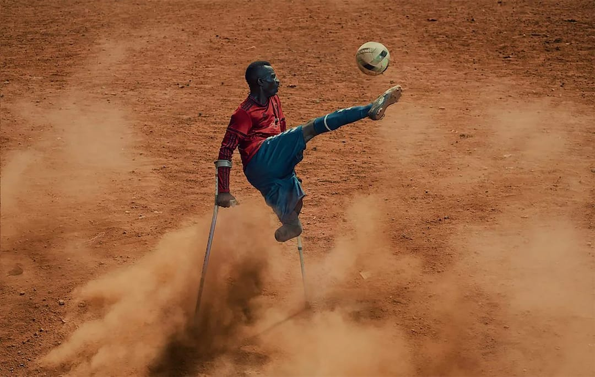

Source review, 31 October 2026: The figures, definitions and technology examples below have been checked and updated. This remains a personal reflection first published in September 2023.
Growing up Nigerian, I am always moved when I see disabled people on our streets daily. From the weary upper limb amputee soliciting for alms to happy-go-lucky Uncle Fyneface dazzling us with his football skills as he juggled the ball with his remaining leg and hopped on his locally-made wooden crutch, I wondered how everyday life was for them. As a kid, I knew no better and could only offer my sympathy and, on occasions when my mother heeded my pleas, some spare change I saw around.

Becoming an adult meant realizing my privilege as an able-bodied person, developing empathy for these people and thinking of ways to help them. Being a designer meant realizing the current Nigerian society is not built with consideration for the disabled, with some of us seeing them as less. While I can’t change what is now, I hope I can educate more people to look at society from the perspective of a disabled person and build for the Nigerian future with them in mind.
What Is a Disability?
The CDC’s Disability and Health Overview describes disability in terms of impairments, limits on activities and restrictions on participation. A condition can affect what someone can do, but the environment also matters. Stairs, unreadable information or an inaccessible service can make participation harder. People with the same condition can have very different experiences.
In its fact sheet dated 7 March 2023, the World Health Organization estimated that 1.3 billion people, or 16% of the global population, experienced significant disability. That is a global estimate with a particular definition, not a percentage we can simply apply to every country.
In October/November 2019, while applying to schools abroad for a Master’s degree scholarship, I started paying attention to estimates of disability in Nigeria. It made me think about how many people our everyday designs leave out.
The World Bank’s 2020 assessment of disability inclusion in Nigeria explains why those estimates need care: surveys use different definitions, questions and age groups. Its discussion of the 2018 Nigeria Demographic and Health Survey concerns functional difficulties among household members above age five. These are dated findings, not a current count of all Nigerians with disabilities.
Ever since then, I have been intrigued by what disability means to us as a society, how we can build for disabled people and what able-bodied people gain from building inclusively. To do this, we have to realise that disability is diverse and intersectional. It can affect us directly or indirectly, and our needs can change over time.
For design, I find the permanent, temporary and situational lens in Microsoft’s Inclusive Design toolkit useful. This is a way to think about barriers, not a complete medical classification of disability:
- Permanent: A person with one arm may need to use an interface with one hand.
- Temporary: Someone recovering from an arm injury may also need one-handed access for a time.
- Situational: Someone holding or breastfeeding a baby may have only one hand available. A noisy setting can also make a video difficult to follow without captions.
The circumstances are different, but some design choices can help across them: controls that work with one hand, readable text and captions that do not make listening the only way to follow a video. Temporary inconvenience is not the same experience as living with a long-term disability; this lens helps us spot related barriers without flattening those differences.

Why Accessibility is Important
Accessibility can be defined in several different ways. It means removing any barriers that might prevent persons with disabilities from being able to access technology, information, or experiences and levelling the playing field to give everyone an equal chance of enjoying life and being successful.
Accessibility means making room for people with disabilities to participate. Some of the same design choices can also help people facing temporary or situational barriers. Those wider benefits are valuable, but the needs of people living with disabilities should not become an afterthought in the name of designing for everyone.
Accessibility work can also reveal useful ways to communicate. For example:
- Captions give Deaf and hard-of-hearing people access to speech and important sounds in a video. They can also help someone who cannot hear the audio in their current surroundings. Accurate captions carry information such as a speaker change or a sound that matters to the scene, not just a rough transcript.
- Email lets us communicate in writing without requiring a voice call. Its history belongs to several contributors: the Internet Society’s history, published in 1997 and co-authored by Vint Cerf, describes early email work by Ray Tomlinson and Larry Roberts, alongside the wider work on network protocols.
- Google Research’s August 2019 account of Project Euphonia describes personalising speech recognition for people whose speech was poorly served by existing models. The researchers reported improvements in a limited test setting and cautioned against treating those results as performance on general tasks.
Design for All People
Building a world that not only includes but also caters for the disabled is not just a responsibility but a moral obligation. As a designer, you should ask yourself two crucial questions before embarking on any task/project:
- Who am I designing for?
- Are there any physical or social limitations that would affect how my audience interacts with this design?
As a brand/graphic/visual designer, think beyond aesthetics. When selecting colours, do you consider how people with different kinds of colour vision will read the design? The National Eye Institute explains the different red-green and blue-yellow colour-vision deficiencies; they are not simply an inability to see one named colour. Do not rely on colour alone to distinguish important information. Prioritize clear typography; use legible fonts and ensure text is resizable without loss of content or functionality.
As a packaging designer, do you consider how the visually impaired will properly interact with all aspects of your product? What existing methods, practices or technologies can make that product a more wholesome experience for a disabled person? Imagine the tactile journey for the visually impaired; create experiences, not just products.
As an educator, how do you prioritize inclusivity in your classes? Do you know any sign languages? Do you upload your video content with legible captions so the hearing-impaired can adequately follow?
As an architect, place accessibility at the heart of your designs. Consider how a wheelchair user or an aged person will access the spaces you’re designing. The same processes should be applied to creating accessible wayfinding designs and emergency exits that are tailored to aiding disabled people. Many Nigerian spaces treat disabled access as an afterthought; let’s start doing it differently.
As a developer, create digital experiences that are welcoming to all users. Make sure applications and websites are usable by people with disabilities. If possible, test with screen readers and keyboard navigation. Ensure all interactive elements can be accessed and operated using only a keyboard.
As a town planner, you also have a role to play. From designing wide curb cuts for wheelchair access to creating walkway ramps that can comfortably accommodate a disabled person and an able-bodied person walking side-by-side to accessible public transport, you can make your city/town more disability-friendly.
Even in our daily lives, doing things like using ALT text properly to allow the visually impaired to understand the context of your new favourite picture on Twitter or Instagram can make a difference. The W3C Images Tutorial is a useful guide to writing alternatives that fit the image’s purpose and context. Decorative images do not need a spoken description.
These are just a few examples of why accessibility should matter to all of us. We all have a role to play in building inclusive societies, no matter our profession, location or lifestyle. Where others see a disability, see inspiration to solve a design problem. By empathizing with the problems of others, we might create things we otherwise wouldn’t have created for ourselves.
By designing for people with disabilities in mind, we can create better products for everyone else.
Selah.
Where to Start
Here are some valuable tools to get you started on designing for accessibility:
- ColorOracle, a free color blindness simulator that applies a full screen colour filter to your screen to mimic it would look to different types of colour-blind people.
If you’re interested in learning more about designing for accessibility, check out the following resources:
- Disability Technology, a TEDx Talk by Jeff Paradee.
- Inclusive Design: 12 Ways to Design for Everyone, an article by Oliver Lindberg for Shopify.
- Accessibility Fundamentals Overview by W3C.
- User Friendly: How the Hidden Rules of Design Are Changing the Way We Live, Work, and Play, a book by Cliff Kuang & Robert Fabricant. You can get this from your local bookstore.
- The book Disability Friendly: How to Move from Clueless to Inclusive by John D. Kemp.
- Google Research’s Project Euphonia overview.
- Healed through A.I., episode 2 of the first season of the YouTube Originals series, The Age of A.I.
Have you ever encountered a situation where a lack of accessibility affected someone’s daily life? Tell me about it.